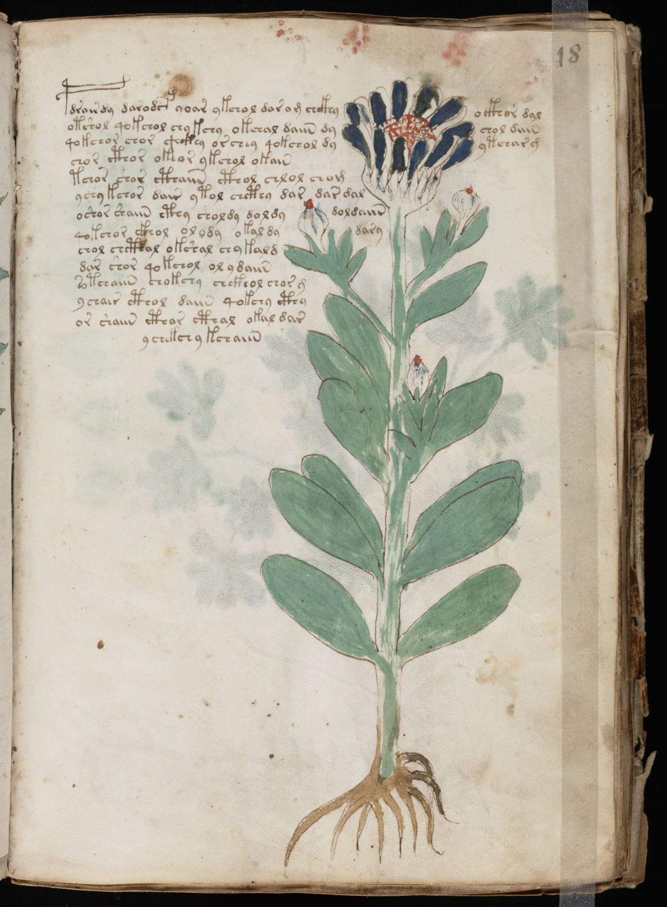

f18r
1pdrairdy darodsf yoar ykchol dar o m chckhyockhor dal2otshol qokchol chykchy okchal daiin dychol diiin3qokchor chor chckhy orchey qokchol dyytchar g4chor cthor okeor ykchol okain5tchor shor cthaiin cthol chlol chom6ychy kchor dair ytol chcthy dar dar dal7oshor shaiin cthy sholdy doldy doldaiin8qokchor ckhol olody okaldydary9chol chcthal okshal chykald10dar shor qokchol ol ydaiin11sotchaiin chokchy chekhol chor g12ychair cthol daiin qokchy cthy13or shaiin cthar cthal okal dar14ychekchy kchaiin
